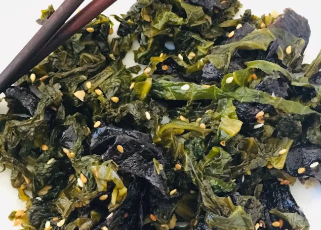

Greens

Collard Greens
Description
How to cook southern style collard greens with maximum flavor...
Just burn them a little
Ingredients
- Collard Greens
- Half a slice of cooked bacon cut into pieces
Steps
- Fill a 5 qt. pot 1/2 way with water
- Add collard greens and bacon
- Bring to a boil, then turn to med-low and cover
- Cook for 4 hours or until no liquid remains